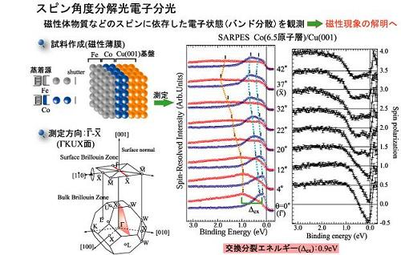

スピン分解光電子分光を用いた電子構造の研究
固体中における電子状態は「運動量」・「エネルギー」・「スピン」という３つの自由度で記述することができる。 電子の運動量とエネルギーの対応関係（バンド分散）については、角度分解光電子分光(ARPES) 実験を行うことで直接観測することができ、現在までに多くの研究結果が報告されている。 一方で、もう１つの電子の自由度であるスピンをspin-upとspin-downの２つの状態に分離して観測することは技術的に非常に困難である。 しかし、これはスピンに依存した電子状態の解明にとって非常に効果的である。近年、フラッシュメモリやDRAM(Dynamic Rondom Access Memory) などのエレクトロニクスデバイスは、世界中で研究開発が盛んに行われており、性能の向上が著しい。 これらのデバイスは、コンデンサーに蓄積された電子の電荷でデータを記録しており、読み書き速度や揮発性の問題から次世代のデバイスの開発が要望されている。 現在、新しいデバイス技術として、電荷だけではなく内部自由度であるスピンも制御するプピントロニクスデバイス MRAM(Magnetoresistive Random Access Memory)が提唱されている。 このように、応用の面からも電子のスピンに対する注目大きくなっている。
現在、スピンに分解した電子状態を観測できる設備を有するのは、国内では広島大学放射光科学研究センターと東大物性研だけだが、安定して稼働状態にあり、共同利用研究の成果があがっているのは放射光科学研究センターが唯一である。
谷口研究室では、この装置を用いてハーフメタル強磁性体や磁性薄膜及び低次元系金属のスピン電子状態の研究、スピン依存した量子井戸状態の研究を行っている。
スピン分解光電子分光
Spin-Resolved Photoemission Spectroscopy
谷口研究室では、世界に先駆けてモット型のスピン検出器を用いたスピン角度分解光電子分光装置を開発し、電子スピン密度の偏りや偏局度を抽出し研究を行っている。
